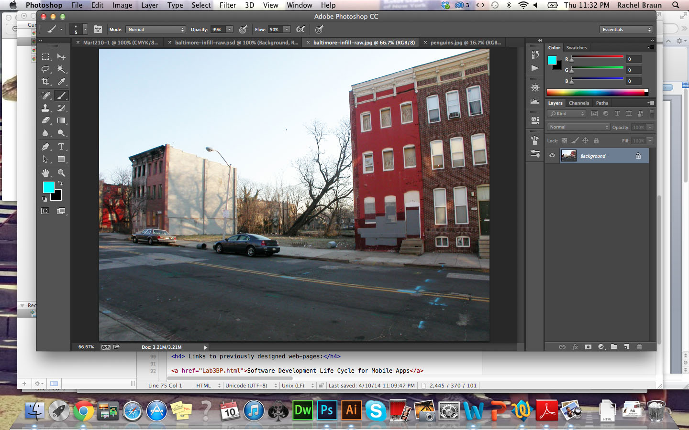

P3NGUiNZ
P3NGUiNZ| Rachel Braun DesignP3NGUiNZ |
This is my sidebar. |
 I observed the landscape of the beautiful city of Baltimore I had before me. It was barren and just a typical Northeastern city to me, so it seemed. After much pondering and thinking, I decided just what Baltimore needed: a penguin exhibit. And not just any penguin exhibit, an exhibit not fenced in and larger than life! What Baltimore citizen doesn't want to view penguins in their not-so-natural habitat on their walk to the market or to work? I found a picture of penguins that was cohesive with the angle of the photo. I also made sure the picture would blend nicely with the landscape I was provided. I then opened Photoshop and began my work. While working on this project I was watching videos of penguins on Youtube.  |